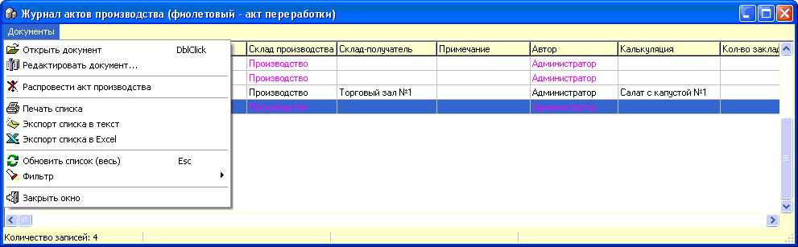

Данный журнал позволяет работать с сохраненными
ранее актами производства и переработки.

Пункт главного меню "Распровести акт
производства" при нажатии проверяет участие созданных актом партий товаров в
других документах, и если таковых нет, то позволяет удалить сам акт,
подчиненные документы и вернуть остатки на исходные партии/склады. Для актов
переработки распроводка осуществляется в их построчном удалении в режиме
редактирования документа.
Доступен фильтр, который позволяет отобрать
документы согласно требуемых критериев поиска.